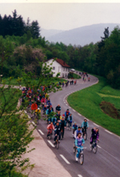
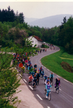

Le début d'une histoire
 L'association BALLAST , créée en 1993, a rendu possible, par de multiples actions, la transformation en Voie Verte de l'ancienne voie ferrée Remiremont-Cornimont dans la vallée de la Moselotte. Devenue réalité en 1999, cette Voie Verte est aujourd'hui gérée par un syndicat intercommunal.

L'association BALLAST , créée en 1993, a rendu possible, par de multiples actions, la transformation en Voie Verte de l'ancienne voie ferrée Remiremont-Cornimont dans la vallée de la Moselotte. Devenue réalité en 1999, cette Voie Verte est aujourd'hui gérée par un syndicat intercommunal.

Chaque année, depuis 6 ans, l'association Ballast anime la Voie Verte des Hautes Vosges le 1 er week-end de juin en organisant un festival culturel, sans voiture, au rythme des vélos, et qui connaît un succès grandissant. Ballast organise également des sorties découvertes (patrimoine – paysage – flore) en vélo calèche sur et autour de la Voie Verte pour les personnes à mobilité réduite(résidents de maison de retraite, handicapés …)
L'association Ballast mène aussi une politique de développement durable en invitant les élus, les commerçants, les collégiens et tous les habitants à favoriser les déplacements cyclables vers les centres bourgs.
En 2003, la Voie Verte des Hautes Vosges a obtenu le 3 ème Prix des Voies Vertes Européennes pour la qualité de ses animations. En 2007, elle a obtenu une mention spéciale dans la catégorie « Tourisme et développement ».
 Tous les drois sont reservés
Tous les drois sont reservés